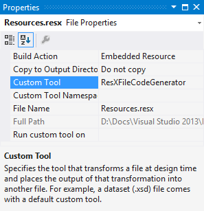

Running a custom tool automatically when a file is modified
As far as I can remember, Visual Studio always had something called “custom tools”, also known as single-file generators. When you apply such a tool to a file in your project, it will generate something (typically code, but not necessarily) based on the content of the file. For instance, the default custom tool for resource files is called ResXFileCodeGenerator, and generates a class that provides easy access to the resources defined in the resx file.

When you save a file that has a custom tool associated to it, Visual Studio will automatically rerun the custom tool to regenerate its output. You can also do it manually, by invoking the “Run custom tool” command in the context menu of a project item.
Usually, the custom tool needs only one input file to generate its output, but sometimes things are a bit more complex. For instance, consider T4 templates : they have a custom tool associated with them (TextTemplatingFileGenerator), so this tool will be run when the template is saved, but in many cases, the template itself uses other input files to generate its output. So the custom tool needs to be run not only when the template is modified, but also when files on which the template depends are modified. Since there is no way to tell Visual Studio about this dependency, you have to rerun the custom tool manually, which is quite annoying…
Because I was in this situation, and was tired of manually invoking the “Run custom tool” command on my T4 templates, I eventually created a Visual Studio extension to do this automatically: AutoRunCustomTool. The name isn’t very imaginative, but at least it’s descriptive…
This tool is designed to be very simple and unobtrusive; it just does its work silently, without getting in your way. It adds a new property to each project item : “Run custom tool on”. This property is a collection of file names for which the custom tool must be run every time this project item is saved. For instance, if you have a T4 template (Template.tt) that generates a file (Output.txt) based on the content of another file (Input.txt), you just need to add “Template.tt” to the “Run custom tool on” property of Input.txt. Every time you save Input.txt, the custom tool will be automatically rerun on Template.tt, which will regenerate the content of Output.txt. You can see a concrete example on the tool’s page in Visual Studio Gallery.
I created AutoRunCustomTool about 6 months ago, but the initial version was a bit rough around the edges, so I didn’t communicate about it. I released the second version a few days ago, and I think it’s now ready for everyone to use. If you’re interested in the code, you can find it on GitHub, which is also the place to report issues and suggest improvements.